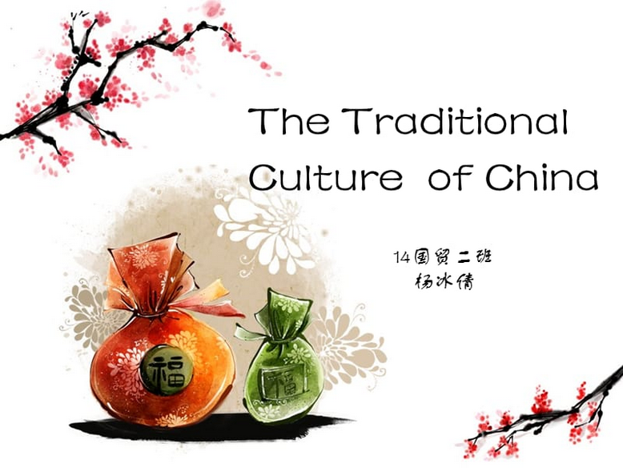

Picture display
Home page
more>

Welcome to Chinese traditional culture website! China has a long and rich traditional culture, including calligraphy, painting, music, drama and other aspects, showing a unique charm and charm. Here, we will deeply explore the essence of traditional Chinese culture and understand its long history and cultural connotation. Let's enjoy the unique charm of traditional Chinese culture together!